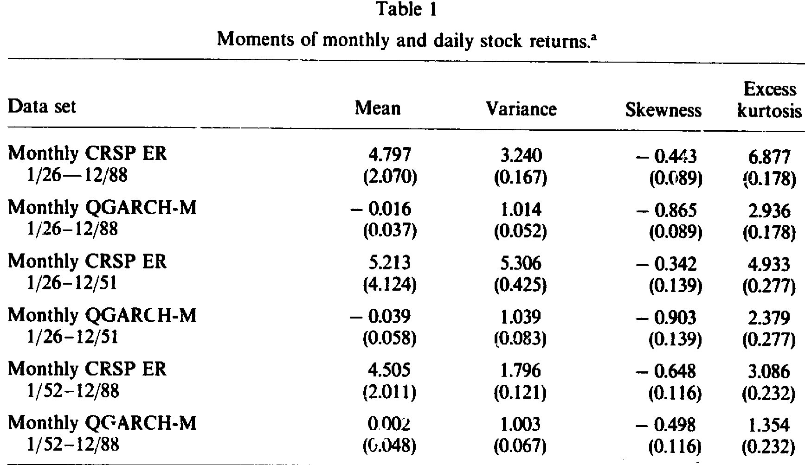
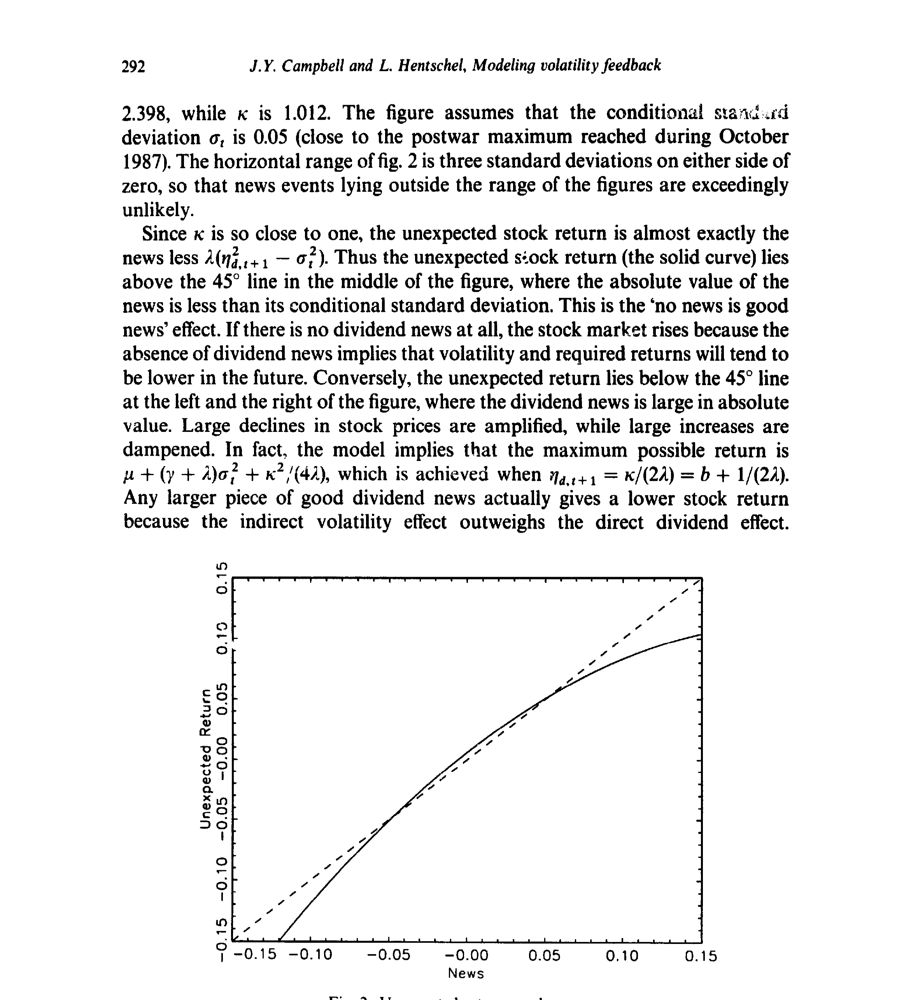
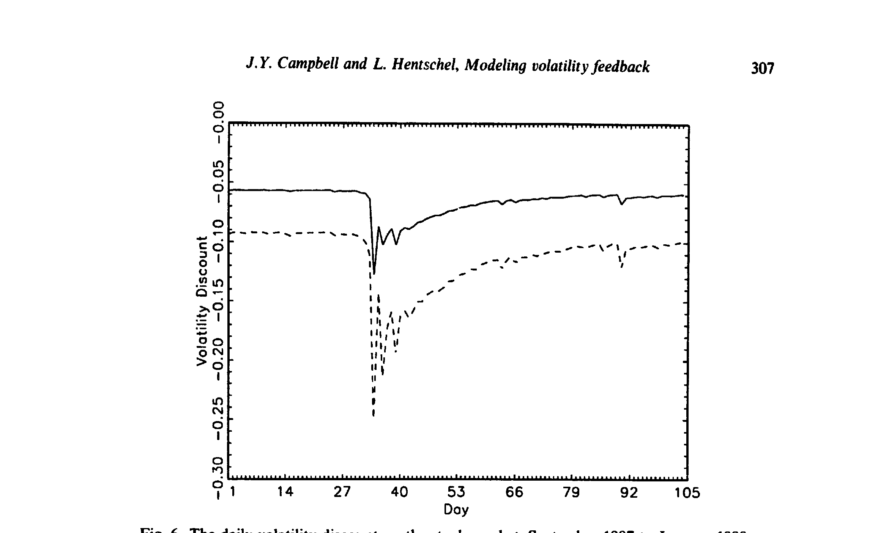
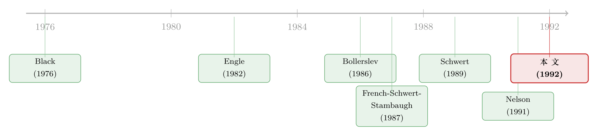

没有消息，就是好消息——一个让股市「怕涨更怕跌」的波动率模型
本文读的是 Campbell & Hentschel (1992, Journal of Financial Economics)：他们用一个非对称的 二次型 GARCH (quadratic GARCH, QGARCH) 模型，把「波动率上升会压低股价」这个老直觉第一次完整地写成了公式。结论出人意料地温和——波动率反馈 (volatility feedback) 在平常几乎可以忽略，但一旦市场进入高波动期（比如 1987 年 10 月），它就足以把一则坏消息放大成一场暴跌，并由此自然地解释了美国股票收益里那挥之不去的 负偏度 (negative skewness) 与 超额峰度 (excess kurtosis)。
1 一个被无数人「说过」、却没人「算过」的故事
股票市场有一桩怪事：大跌比大涨更常见。
二战之后标普 500 指数最大的五次单日变动里，四次是下跌、只有一次是上涨；最大的十次里，八次是下跌。把时钟拨回 1885 年，最大的十次里也有六次是下跌。这就是收益的负偏度——一种「同期的不对称」。再加上一桩：极端的价格变动远比正态分布预言的要多，而且这种超额峰度在用条件标准差把收益标准化之后依然顽固地存在（Bollerslev 1987）。1987 年 10 月 19 日那一跌，即便拿当月早些时候的波动来衡量，也大得离谱。
为什么会这样？一个被反复提起的嫌疑人，叫波动率反馈。它的逻辑听上去几乎是常识：如果波动率上升会抬高投资者要求的回报率，那么股价就会被压低；而既然「大消息往往跟着大消息」（波动是持续的），任何一则大消息都会推高未来的预期波动，从而通过这条渠道反过来压股价。
这个想法早在 Pindyck (1984) 和 French, Schwert & Stambaugh (1987) 那里就被反复强调过。它的诱人之处在于：它有潜力同时解释上面那几桩怪事。
把这条逻辑顺着走一遍，你就能体会本文标题的妙处。 一则大的好消息：股价本该上涨，但它顺带推高了未来波动，要求回报随之上升、股价被往下拽，于是好消息的正面冲击被削弱了。 一则大的坏消息：股价本该下跌，而波动上升又一次抬高要求回报、再压一脚，于是坏消息的负面冲击被放大了。 一则小消息、甚至没有消息：未来波动不升反降，要求回报下降，股价于是上涨——「没有消息，就是好消息」。
你看，同样一个波动率反馈机制，对正负消息是不对称的：它放大下跌、削弱上涨。负偏度有了着落；而下跌被放大到极端，就能产生超额峰度。
可问题来了。这么漂亮的故事，在 Campbell 和 Hentschel 写这篇论文之前，居然没有人真正把它写成一个完整的模型。前人至多是「informally」地谈论它，拿它来事后解释 GARCH 模型的估计结果。
接着，一个自然的问题是：现成的工具箱里，难道没有合适的模型吗？
2 为什么现成的 GARCH 模型「装不下」这个故事
我们先盘一盘库存。
最基础的 GARCH 模型（Engle 1982; Bollerslev 1986）假设条件均值收益是常数，所以它压根没有「波动影响要求回报」这条机制。
进一步的 GARCH-in-mean（GARCH-M, Engle, Lilien & Robins 1987）允许条件均值收益依赖于条件方差——这总该够了吧？还是不够。在条件正态的假设下，GARCH-M 依然强行令收益与未来波动之间的相关为零、条件偏度为零、超额峰度为零。French, Schwert & Stambaugh (1987) 估了一个 GARCH-M，发现条件均值与方差之间有显著的正相关，他们也明说「应该把波动率反馈带来的负偏度考虑进去」（第 22–23 页），但他们没有去做。
然后是第二代模型：Nelson (1991) 的指数 GARCH（EGARCH）、Engle (1990) 与 Sentana (1991) 的二次型 GARCH（QGARCH）、以及 Turner, Startz & Nelson (1989) 的马尔可夫切换模型。它们都能让收益与未来波动相关。
但真正关键的一步在于：作者并不满足于「拿一个统计模型直接套在收益上」。他们想要的是一个经济解释——把统计模型套在外生变量（股利消息）上，再让收益的行为从一个资产定价框架里推导出来。这正是本文与那些「非正态新息」统计模型（Engle & González-Rivera 1989; Nelson 1991）的分水岭：
在他们的模型里，收益的非正态性完全来自波动率反馈，并且被一阶矩、二阶矩的参数钉死——没有引入任何新参数去单独拟合三阶矩和四阶矩。换句话说，偏度和峰度不是「调」出来的，而是机制「逼」出来的。
在动手推公式之前，先看一眼数据到底有多「不正常」。表 1 报告了 CRSP 价值加权指数（相对一个月期国库券的对数超额收益）在月度和日度、全样本与子样本下的各阶矩。月度超额收益的偏度是 -0.443、超额峰度 6.877；而把 QGARCH-M 模型的残差标准化之后，偏度反而是 -0.865——这恰恰说明，单靠「条件方差在变」并不能洗掉这份偏度。日度 1952–88 子样本更夸张，原始超额收益偏度 -1.782、超额峰度高达 45.515。

Table 1
负偏度还稳健吗？图 1 把标准化残差的样本偏度逐十年（月度）、逐年（日度）画出来：月度数据在每一个十年里都是负偏的，日度数据虽然弱一些，但绝大多数年份仍为负。这不是某一段历史的巧合。
3 模型：把「没有消息就是好消息」一步步算出来
这一节是全文的心脏。我们沿着作者的推导走三步：先有一个能容纳「贴现率会变」的价格框架，再给股利消息一个会「记仇」的波动率过程，最后把「波动定价」这条假设接上去，让收益的二次型形态自己长出来。
3.1 第一块积木：Campbell–Shiller 的对数线性近似
难点在于，当预期收益随时间变化时，标准的现值关系是非线性的，几乎无法处理。Campbell & Shiller (1988) 提出了一个对数线性近似，既好算又意外地精确。本文跟随 Campbell (1991) 用期末价格。定义一期对数持有收益 \(h_{t+1}\equiv \log(P_{t+1}+D_{t+1})-\log(P_t)\)，对它做一阶泰勒展开：
$$ h_{t+1} \approx k + \rho\,p_{t+1} + (1-\rho)\,d_{t+1} - p_t $$
其中小写字母是对数，\(\rho\) 是股价占「股价+股利」的平均比例，一个略小于 1 的数。直觉上，未来对数股价拿到的权重远大于未来对数股利，因为同样的百分比变动，发生在股价上的绝对量更大。
把它当成关于 \(p_t\) 的差分方程向前求解，并施加排除「理性泡沫」的终端条件 \(\lim_{i\to\infty}\rho^{i}E_t\,p_{t+i}=0\)，就得到价格等于未来股利与未来收益之差的贴现和。再用它把 \(p_t\)、\(p_{t+1}\) 从近似式里替换掉（Campbell 1991），得到本文真正要用的那个分解：
$$ h_{t+1} - E_t h_{t+1} = (E_{t+1}-E_t)\sum_{j=0}^{\infty}\rho^{j}\Delta d_{t+1+j} - (E_{t+1}-E_t)\sum_{j=1}^{\infty}\rho^{j}h_{t+1+j} $$
写成紧凑形式：
$$ v_{h,t+1} = \eta_{d,t+1} - \eta_{h,t+1} $$
请记住：这不是一个行为模型，它只是对一个恒等式的近似加上终端条件。它说的是一个「一致性条件」：如果今天的非预期收益是负的，那么要么未来股利预期被下调，要么未来收益预期被上调，二者必居其一或兼有。\(\eta_{d,t+1}\) 是「股利消息」（在超额收益的版本里，它还吸收了实际利率冲击等其他未明确建模的成分），\(\eta_{h,t+1}\) 则承载了波动率反馈效应。
3.2 第二块积木：会「记仇」的股利消息
第一个决定收益的，是股利消息 \(\eta_{d,t+1}\)。作者把它当作一个服从条件正态 QGARCH 过程的外生冲击。以 QGARCH(1,1) 为例：
$$ \sigma_t^2 = \omega + \alpha\left(\eta_{d,t}-b\right)^2 + \beta\,\sigma_{t-1}^2 $$
为保证条件方差恒正，\(\omega,\alpha,\beta\) 都必须为正。\(\alpha\) 度量「今天的平方收益有多少会渗进未来的波动」，\(\alpha+\beta\) 度量波动的持续性。
真正的玄机是那个新参数 \(b\)——简单 GARCH 模型里 \(b=0\)。作者预期 \(b>0\)。一个正的 \(b\) 会在股利消息 \(\eta_{d,t}\) 与下期波动 \(\sigma_t^2\) 之间制造负相关：同样大小的冲击，负向的会比正向的更抬高波动。这正是 Black (1976) 最早讨论的「预测性不对称」。
注意这里的分工：预测性不对称（波动跌后高、涨后低）由 QGARCH 的 \(b\) 来捕捉，它本身不需要波动率反馈——把它单独留给 \(b\) 是明智的，因为 Black 的杠杆效应本就是一个合理的解释。而真正用来制造负偏度、超额峰度的那台机器，是下面接上的「波动定价」假设。
（关于「波动会扎堆」这件事还能不能从投资者偏好里反推出来，可参见《GARCH 从哪儿来？——把「波动会扎堆」这件事，还给投资者的情绪》。）
3.3 第三块积木：把波动「定价」
第二个决定收益的，是关于未来预期收益的消息。作者假设条件预期收益是 \(\eta_{d,t+1}\) 之条件方差的线性函数：
$$ E_t h_{t+1} = \mu + \gamma\,\sigma_t^2 $$
沿用 Merton (1980)，系数 \(\gamma\) 通常被解释为相对风险厌恶系数。Campbell (1992) 证明，在一个区分相对风险厌恶与跨期替代弹性的模型里，只要后者等于 1，这个式子就对市场组合成立、\(\gamma\) 恰是相对风险厌恶。（这条「为长期投资者把波动定价」的思路，与后来 《市场之外，长期投资者还在怕什么？——给 CAPM 装上第三颗「会怕波动」的心》 一脉相承。）
把这条假设代入 QGARCH(1,1)，可以写出任意未来日期的预期收益，进而算出所有未来预期收益的贴现和——它的后两项就是股价上的「波动率折价 (volatility discount)」：价格比「股利毫无不确定性时」应有的水平低了多少。其中一项是无条件的平均折价，另一项随条件波动而变。
3.4 反转：收益变成了消息的「二次函数」
把上面几块拼起来，就得到了本文的招牌方程：
$$ h_{t+1} = \mu + \gamma\sigma_t^2 + \eta_{d,t+1} - \lambda\left(\eta_{d,t+1}^2 - \sigma_t^2 - 2b\,\eta_{d,t+1}\right) $$
前三项正是过去常用的标准 GARCH-M 模型。全新的是最后一项：一个异常大的股利消息（无论正负）都会推高波动、压低股价、造成负的非预期收益；而一个小的正向股利消息则会降低波动、推高收益（当 \(b>0\) 时）。波动率反馈的强度由参数 \(\lambda\) 度量：
$$ \lambda = \frac{\gamma\rho\alpha}{1-\rho(\alpha+\beta)} $$
这个式子很说明问题：\(\lambda\) 取决于波动对预期收益的影响 \(\gamma\)、冲击对下期波动的影响 \(\alpha\)、以及波动的持续性 \(\alpha+\beta\)。因为 \(\rho<1\)，即便波动具有无限持续性（\(\alpha+\beta=1\) 的 IGARCH），\(\lambda\) 依然是良定义的。
整理后，非预期收益就成了基础消息的一个二次函数——这才是「没有消息就是好消息」最干净的表达：
作者在附录 A 中证明，这个二次型表达对任意 QGARCH(\(p,q\)) 过程都成立，只要 \(\kappa\) 和 \(\lambda\) 按底层方差参数适当重新定义即可（日度数据用的是 QGARCH(1,2)）。所以它相当通用。
现在来看这条曲线长什么样。图 2 用作者从战后日度数据估出的参数（\(\lambda=2.398\)、\(\kappa=1.012\)）画出非预期收益对消息的关系，并假设条件标准差 \(\sigma_t=0.05\)（接近 1987 年 10 月的战后峰值）。

Figure 2: Unexpected returns and news
由于 \(\kappa\) 极其接近 1，非预期收益几乎就是「消息减去 \(\lambda(\eta_{d,t+1}^2-\sigma_t^2)\)」。于是在图的中段——消息绝对值小于其条件标准差时——实线位于 45° 线之上：这就是「没有消息就是好消息」。如果完全没有股利消息，市场反而上涨，因为「无消息」意味着未来波动与要求回报都会下降。而当消息变大，二次项发力，曲线被狠狠往下压，且对负向消息的下压更猛——负偏度与肥尾就是这么来的。
4 模型说了什么——以及它「没说」什么
把模型搬到数据上，最反直觉的结论是：波动率反馈在平常几乎无足轻重。
为什么？因为在二次项 \(\lambda(\eta_{d,t+1}^2-\sigma_t^2)\) 里，只有当消息的平方显著偏离当前条件方差时，反馈才会咬人。在低波动、消息温和的常态下，这一项小到可以忽略，收益看上去就和一个普通的 GARCH-M 没什么两样。
但一旦进入高波动期，故事完全不同。条件标准差越大，那条二次曲线就越「陡」，同样一则坏消息被放大的幅度就越惊人。这正是为什么模型能抓住 1987 年 10 月那种极端事件：图 6 把 1987 年 9 月到 1988 年 1 月的日度波动率折价画了出来，崩盘前后那道折价的跳升，正是反馈机制在高波动期被瞬间激活的写照。

Figure 6: The daily volatility discount on the stock market, September 1987 to January 1988
于是负偏度、超额峰度、收益与未来波动的负相关——这三桩开篇的怪事——在同一个机制下被统一解释，而且没有动用任何额外的自由参数。这是本文最漂亮的地方。
5 文献脉络
这条线的起点，是 Black (1976) 那个朴素的观察：波动在股市下跌后更高，他归因于杠杆效应；但 Christie (1982)、Schwert (1989) 后来发现杠杆效应太小，撑不起全部现象。与此并行，Engle (1982) 与 Bollerslev (1986) 给了我们刻画时变波动的 GARCH 工具，French, Schwert & Stambaugh (1987) 与 Bollerslev (1987) 把它用到股票上，并第一次把「收益对波动新息回归得到负系数」解读为波动率反馈。

接着，第二代模型登场：Nelson (1991) 的 EGARCH、Engle (1990) 与 Sentana (1991) 的 QGARCH，让收益终于能与未来波动相关。本文站在 QGARCH 的肩膀上，但走得更远——它不是又一个统计模型，而是把 Campbell & Shiller (1988)、Campbell (1991) 的对数线性资产定价框架与「波动定价」假设嫁接进来，让非对称、负偏度、肥尾从经济机制中内生地涌现。这是这条脉络上第一个「fully worked out」的波动率反馈模型。
6 评论与延伸（Q&A + 研究方向）
(a) 几个可能的疑问
Q：这和普通的 GARCH-M 到底差在哪？
差在那个新增的二次项 \(-\lambda(\eta_{d,t+1}^2-\sigma_t^2)\)。GARCH-M 只让条件均值依赖方差（一个缓慢移动的水平项），在条件正态下它强行令偏度、超额峰度、收益—未来波动相关全部为零。本文的二次项让非预期收益本身成为消息的二次函数，于是非对称和肥尾自然出现，且不靠任何新参数。
Q：为什么强调用「对数收益」而不是「简单收益」？
因为标准的几何布朗运动模型意味着对数收益（而非离散时间下测得的简单收益）才是正态的。作者明说：负偏度的证据依赖于用对数收益；这是概念上正确的做法，否则偏度结论会被测度方式污染。
Q：QGARCH 的 \(b\) 和波动率反馈 \(\lambda\)，是不是在重复干同一件事？
不是，这是本文一个聪明的设计。\(b>0\) 负责「预测性不对称」（波动在下跌后更高），这件事 Black 的杠杆效应就能解释，不必动用反馈；而 \(\lambda\) 负责「同期不对称」（负偏度、肥尾）。把两种不对称交给两个不同参数，识别上更干净，也更诚实。
Q：「波动率反馈平常没用」这个结论，会不会只是参数估得太小？
关键不在 \(\lambda\) 的绝对大小，而在二次项 \(\lambda(\eta^2-\sigma^2)\) 只有当消息平方大幅偏离条件方差时才被激活。低波动期它本就接近零，高波动期才发力——这是机制的形状决定的，不是把系数硬压小。1987 年的案例正是反例式的证据。
Q：\(\eta_{d,t+1}\) 被叫做「股利消息」，但它真的是股利吗？
不完全是，这是模型一个诚实的软肋。在超额收益版本里 \(\eta_{d,t+1}\) 是一个残差项，吸收了实际利率冲击、以及来自其他源头的预期超额收益变动。作者自己承认，实践中「非波动引致的预期收益变动」很可能是这个冲击里的重要成分。所以把它一律解读为「股利基本面」要小心。
Q：\(\gamma\) 真能当相对风险厌恶来读吗？
只在很强的假设下。Merton (1980) 的传统解读需要严格条件；Campbell (1992) 给出的充分条件是「跨期替代弹性等于 1」时它对市场组合成立。再加上式 (7) 用的是 \(\eta_{d}\) 的方差而非收益本身的方差，二者并不完全等价（实证里差异小）。所以 \(\gamma\) 是个「近似的」风险厌恶。
(b) 几个可能的研究问题与提案
1. 把「波动率反馈」搬到公司债与信用利差上。 【经济故事】股票里波动上升压低价格、放大坏消息；信用市场里，资产波动上升本就直接抬高违约期权价值、压低债价。一个 QGARCH 式的非对称反馈机制，或许能解释信用利差为何在高波动期「跳变」而非平滑移动。 【可行性】中。日度的 TRACE 公司债收益、CDS 利差都可得；难点在于把「股利消息」对应到信用市场的基本面冲击，识别上不轻松，但二次型设定是可移植的。
2. 危机期的「反馈激活」与流动性枯竭谁先谁后？ 【经济故事】本文说反馈在高波动期才咬人，而高波动期往往也是流动性最差的时候。到底是要求回报上升（反馈）压低价格，还是流动性溢价飙升压低价格？两条渠道在 2008、2020 都同时在场。 【可行性】中。用高频价格区分二次型反馈与买卖价差/价格冲击的贡献，需要干净的流动性度量；可借鉴危机期公司债流动性的微观研究设计。
3. 外资持有人会不会改变反馈的「形状」？ 【经济故事】如果外资投资者的风险厌恶 \(\gamma\) 或对波动持续性的感知不同于本土投资者，那么同一市场在外资占比上升后，其条件偏度与峰度应当系统性改变。 【可行性】中偏低。需要把持有人结构（外资占比）与个股/指数的条件矩配起来，识别外生变动（如指数纳入、可投资度改革）作为冲击，doable 但对数据要求高。
4. 用期权隐含偏度直接检验反馈机制。 【经济故事】本文的条件偏度（图 5）是从模型残差里算出来的；而期权市场的隐含偏度是「前瞻的」。如果波动率反馈是真的，那么隐含偏度应当随隐含波动水平而系统地变陡。 【可行性】高。指数期权的隐含波动率曲面数据成熟，把隐含偏度对隐含波动回归即可做一个干净的、模型自由的旁证。
7 我的判断
这篇论文的贡献，与其说是「发现了波动率反馈」，不如说是把一个人人会说、却没人算清的故事，逼成了一个可证伪的方程。它最值得称道的纪律性在于：偏度和峰度不是拟合出来的，而是被一阶、二阶矩参数锁死的——模型没有任何「作弊」的自由度去单独迁就高阶矩。这是一种很高级的克制。结论本身也诚实得可贵：反馈在平常几乎可以忽略，只有在高波动期才重要——这反而比「反馈无处不在」更可信，也更难被证伪式地推翻。
对识别，我有两点保留。其一，\(\eta_{d,t+1}\) 这个「股利消息」是个残差大杂烩，吸收了实际利率冲击和非波动引致的预期收益变动；把它的二阶矩当作纯粹的「股利基本面波动」来定价，机制解读上是脆弱的，作者自己也在第 4 节坦承了这点。其二，模型把「预测性不对称」全推给 \(b\)、把「同期不对称」全推给 \(\lambda\)，这个干净的分工在数据里未必分得这么开——杠杆效应和反馈效应在统计上很可能纠缠，识别两者各自的贡献需要更多外生变动。
后续我最想看到的，是用前瞻的期权隐含矩去直接检验这条二次曲线：如果隐含偏度果真随隐含波动水平变陡，那将是对「没有消息就是好消息」最有力的、模型自由的佐证。
参考文献
- Black, F. (1976). Studies of stock price volatility changes. Proceedings of the 1976 Meetings of the Business and Economics Statistics Section, American Statistical Association, 177–181.
- Bollerslev, T. (1986). Generalized autoregressive conditional heteroskedasticity. Journal of Econometrics 31, 307–328.
- Bollerslev, T. (1987). A conditionally heteroskedastic time series model of security prices and rates of return data. Review of Economics and Statistics 59, 542–547.
- Campbell, J. Y. (1991). A variance decomposition for stock returns. Economic Journal 101, 157–179.
- Campbell, J. Y., & Hentschel, L. (1992). No news is good news: An asymmetric model of changing volatility in stock returns. Journal of Financial Economics 31, 281–318.
- Campbell, J. Y., & Shiller, R. J. (1988). The dividend-price ratio and expectations of future dividends and discount factors. Review of Financial Studies 1, 195–228.
- Christie, A. A. (1982). The stochastic behavior of common stock variances: Value, leverage, and interest rate effects. Journal of Financial Economics 10, 407–432.
- Engle, R. F. (1982). Autoregressive conditional heteroskedasticity with estimates of the variance of United Kingdom inflation. Econometrica 50, 987–1007.
- Engle, R. F., Lilien, D. M., & Robins, R. P. (1987). Estimating time varying risk premia in the term structure: The ARCH-M model. Econometrica 55, 391–407.
- French, K. R., Schwert, G. W., & Stambaugh, R. F. (1987). Expected stock returns and volatility. Journal of Financial Economics 19, 3–29.
- Merton, R. C. (1980). On estimating the expected return on the market: An exploratory analysis. Journal of Financial Economics 8, 323–361.
- Nelson, D. (1991). Conditional heteroskedasticity in asset returns: A new approach. Econometrica 59, 347–370.
- Pindyck, R. S. (1984). Risk, inflation, and the stock market. American Economic Review 74, 335–351.
- Schwert, G. W. (1989). Why does stock market volatility change over time? Journal of Finance 44, 1115–1153.
- Sentana, E. (1991). Quadratic ARCH models: A potential reinterpretation of ARCH models as second-order Taylor approximations. Working paper, London School of Economics.